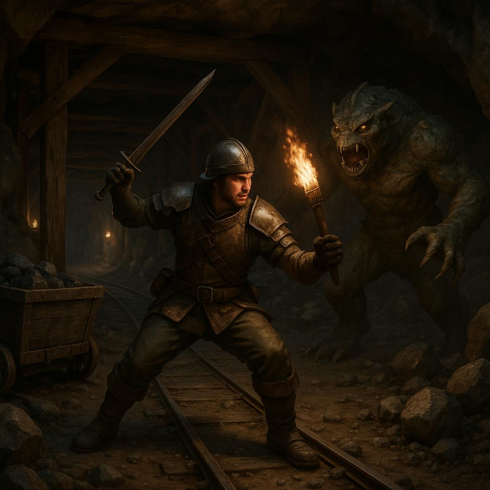

Beginner's Guide and Tips - Stardew Valley Guide - IGN 2026 가이드
Stardew Valley는 농사, 탐험, 전투 등의 다양한 활동을 통해 농장을 발전시키는 샌드박스 스타일의 게임입니다. 이 가이드는 초보자들이 게임을 쉽게 시작하고 즐길 수 있도록 돕기 위해 마련되었습니다. 여기서는 캐릭터 생성부터 농사, 자원 관리, NPC와의 관계 구축에 이르기까지, 게임을 즐기기 위한 다양한 팁과 전략을 다룰 것입니다.
Stardew Valley 소개
게임의 배경
이 게임은 플레이어가 할아버지로부터 물려받은 작은 농장을 경영하며, 다양한 활동을 통해 삶을 즐기는 내용을 담고 있습니다. 플레이어는 농사를 짓고, 광산을 탐험하고, 어업을 하며 마을 주민들과의 관계를 발전시킬 수 있습니다.
주요 특징
- 농사, 채광, 낚시 등의 활동
- 다양한 NPC와의 상호작용
게임 시작하기
캐릭터 생성
게임을 시작하기 위해서는 먼저 캐릭터를 생성해야 합니다. 플레이어는 이름, 외모, 성별 등을 선택할 수 있습니다. 자신만의 캐릭터를 만들어 게임의 세계에 들어가보세요.
농장 선택
다양한 지역에 따라 농장 유형이 달라지므로, 자신의 스타일에 맞는 농장을 선택하는 것이 중요합니다. 각 농장은 특정한 자원과 환경을 제공합니다.
기본적인 농사 방법
작물 선택
계절에 맞는 작물을 재배하는 것이 중요합니다. 각 계절마다 재배할 수 있는 작물이 다르므로, 이를 고려하여 작물을 선택하세요.
물 주기 및 수확
작물이 자라고 나면 수확할 수 있습니다. 수확 후에는 판매하여 자금을 확보하고, 더 나은 도구나 아이템을 구매하는 데 사용하세요.
자원 관리와 제작
자원 수집
농사를 운영하기 위해서는 목재, 돌, 철 등의 자원을 수집해야 합니다. 자원을 효율적으로 관리하는 것이 농장의 발전을 위해 필수적입니다.
제작 시스템 이해
자원을 이용해 도구 및 아이템을 제작하는 시스템을 이해하는 것이 중요합니다. 필요한 도구를 제작하여 농사와 탐험을 더 수월하게 진행하세요.
NPC와의 관계 구축
대화와 선물
마을 주민들과의 관계를 발전시키기 위해서는 대화와 선물이 필수적입니다. 각 NPC의 좋아하는 아이템을 파악하여 적절한 선물을 주면 관계가 향상됩니다.
퀘스트 수행
퀘스트를 수행하면 NPC와의 관계를 더욱 깊이 있게 발전시킬 수 있습니다. 다양한 퀘스트를 통해 마을과의 유대감을 강화하세요.
효율적인 시간 관리
하루 계획 세우기
게임 내에서 하루를 효율적으로 활용하기 위해서는 일정을 잘 계획하는 것이 중요합니다. 작업을 나누어 효율적으로 진행하세요.
우선순위 설정
어떤 작업이 가장 중요한지 우선순위를 설정하여 시간을 관리하는 것이 게임 진행에 큰 도움이 됩니다.

모험과 전투 시스템
던전 탐험
광산에서 자원을 수집하고, 다양한 몬스터를 상대하며 전투를 통해 경험치를 획득할 수 있습니다. 던전을 탐험하는 것은 자원을 얻는 좋은 방법입니다.
몬스터 전투
전투에서는 적의 공격 패턴을 파악하고, 적절한 무기를 사용하여 효율적으로 싸우는 것이 중요합니다. 이를 통해 경험치를 얻고 캐릭터를 성장시킬 수 있습니다.
게임의 끝과 목표
최종 목표
Stardew Valley의 궁극적인 목표는 농장을 발전시키고 마을 사람들과의 관계를 강화하며 다양한 퀘스트를 완료하는 것입니다. 다양한 목표를 설정하고 도전해보세요.
엔딩 종류
게임에는 여러 가지 엔딩이 있으며, 각각의 엔딩은 플레이어의 선택에 따라 달라집니다. 여러 엔딩을 경험해보며 다양한 목표를 달성해보세요.
바로 써먹는 팁
- 매일 아침 농작물과 도구를 점검하세요.
- 자원 수집을 위해 도구를 업그레이드하는 것을 잊지 마세요.
- 각 NPC의 생일을 기억하고 선물을 준비하세요.
실전 체크리스트
- 캐릭터 생성 완료
- 농장 유형 선택
- 작물 재배 계획 세우기
- 자원 수집 시작
- NPC와의 관계 구축 시작
FAQ
- Stardew Valley는 어떤 게임인가요? 농사, 탐험, 전투 등을 통해 농장을 발전시키는 샌드박스 스타일의 게임입니다.
- 게임을 시작하는 데 필요한 최소 시스템 요구사항은 무엇인가요? 저사양 PC에서도 원활히 실행 가능하지만, CPU와 RAM은 기본적인 요구사항을 충족해야 합니다.
- 작물은 어떻게 선택하나요? 계절, 기후, 그리고 판매 가격 등을 고려하여 선택해야 합니다.
- NPC와의 관계는 어떻게 개선하나요? 대화, 선물, 퀘스트 수행 등을 통해 관계를 향상시킬 수 있습니다.
- 전투에서 유리한 팁이 있나요? 적의 공격 패턴을 파악하고, 적절한 무기를 사용하여 효율적으로 전투를 진행하는 것이 중요합니다.
- 게임의 목표는 무엇인가요? 농장을 발전시키고 마을 사람들과의 관계를 구축하며 다양한 퀘스트를 완료하는 것이 목표입니다.
MingMong에서 더 보기
5 Things About Anthropic’s new AI tool sends shudders through software stocks - CNN (2026)
5 Things About South Korea blames Coupang data breach on management failure, not sophisticated attack - Reuters (2026)
참고 링크: 원문 보기